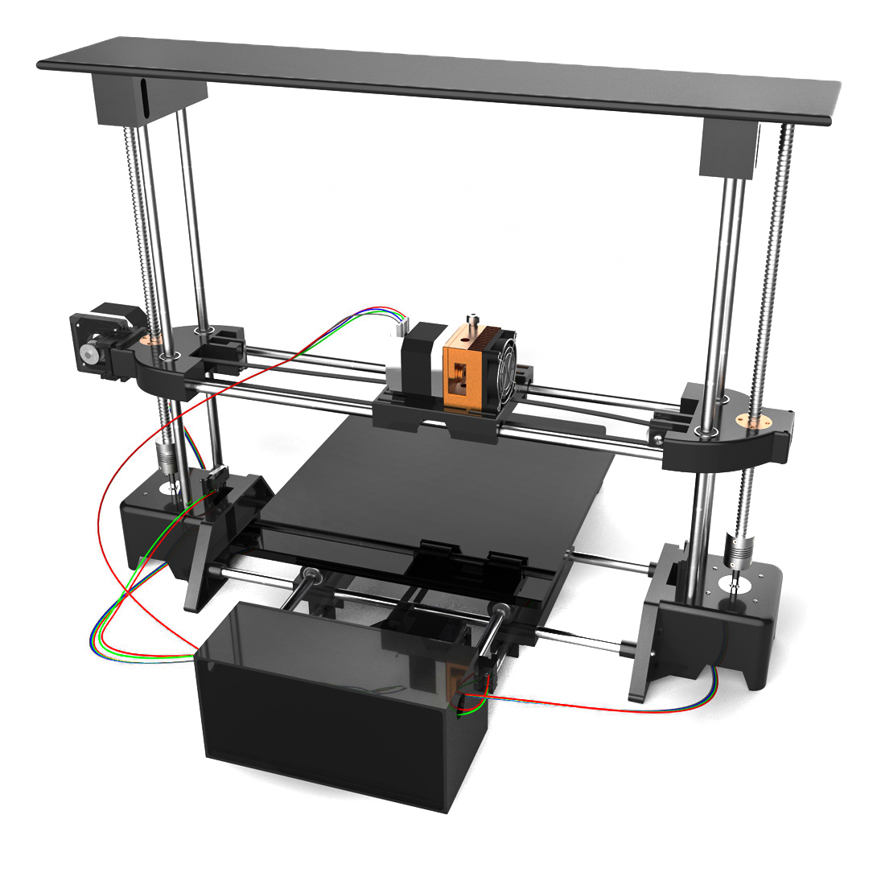
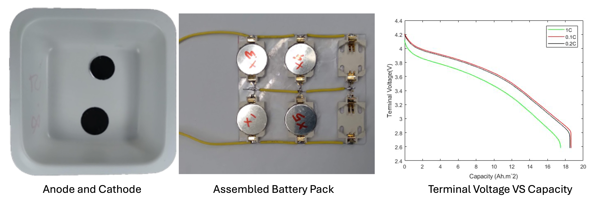

Research Projects
Red Blood Cell (RBC) Resolved Modeling of 3D Angiogenic Microvascular Networks
This project involves digitally reconstructing in vivo angiogenic microvascular networks in 3D using CAD and performing high-fidelity 3D RBC-resolved simulations with over 1500 deformable RBCs. Key findings include:
- Revealed previously unknown in vivo characteristics, including unique 3D Wall Shear Stress (WSS) and wall shear stress gradients (WSSG)
- Identified vessel-to-vessel heterogeneity, WSS hot and cold spots, and RBC effects at sub-endothelial (sub-EC) length scales
- Characterized time-dependent WSS fluctuations across vessel diameters on RBC timescales
Hemodynamics Characterization of Tortuous Microvessels
This research reveals hemodynamic characteristics of real tortuous microvessels under physiological flow conditions:
- Discovered increase in apparent viscosity and reduced Fahraeus effect due to tortuosity
- Identified dependency of hematocrits (Ht) and shear rates on WSS characteristics and Cell Free Layer (CFL)
- Characterized complex flow patterns in realistic vessel geometries
Wall Shear Stress (WSS) Estimation of Angiogenic Sprouts
Through 3D RBC-resolved simulations on in vivo capillary sprouts, this project quantifies time-dependent WSS:
- Revealed previously unknown WSS temporal fluctuations along sprout length, caused by unsteady movements of RBCs in the host vessel
- Identified dependence of temporal WSS on sprout length, host vessel diameter, hematocrit, and flow strength
- Provided insights into mechanical signals during angiogenesis
Journal Publications
- Mir Md Nasim Hossain, Nien-Wen Hu, Liam B Walters, Ali Kazempour, Julia Withrow, Walter L. Murfee, and Peter Balogh (2025). "Estimation of 3D Wall Shear Stress in New Blood Vessel Sprouts Using High-Fidelity Simulations". Biophysical Journal (Accepted).
- Nien-Wen Hu, Mir Md Nasim Hossain, Julia Withrow, Ryan Walker, Ali Kazempour, Nikolaos Tsoukias, Donald G Welsh, Walter L Murfee, Peter Balogh (2025). "Identification of shear stress as a potential vasoconduction signal across microvascular networks". Microvascular Research, Vol 162, Page 104855.
- Mir Md Nasim Hossain, Nien-Wen Hu, Ali Kazempour, Walter L. Murfee, and Peter Balogh (2024). "Hemodynamic Characteristics of a Tortuous Microvessel Using High-Fidelity Red Blood Cell Resolved Simulations". Microcirculation, Vol. 31, Issue 7.
- Mir Md Nasim Hossain, Nien-Wen Hu, Maram Abdelhamid, Simerpreet Singh, Walter L Murfee, Peter Balogh (2023). "Angiogenic Microvascular Wall Shear Stress Patterns Revealed Through Three-dimensional Red Blood Cell Resolved Modeling". Function, Vol. 4, Issue 6.
- Nien-Wen Hu, Banks M. Lomel, Elijah W. Rice, Mir Md Nasim Hossain, Malisa Sarntinoranont, Timothy W. Secomb, Walter L. Murfee, Peter Balogh (2023). "Estimation of Shear Stress Heterogeneity Along Capillary Segments in Angiogenic Rat Mesenteric Microvascular Networks". Microcirculation, Vol. 30, Issue 8.
Book Chapter
Nien-Wen Hu, Arinola Lampejo, Ariana D. Suarez-Martinez, Nicholas Hodges, Mir Md Nasim Hossain, Peter Balogh, Bing Ren, Yong Huang, Jonathan J. Adorno, Shashwat S. Agarwal, Jacob C. Holter, Elton Y. Cao, Jonathan W. Song, Dorothy N. Beck, Shayn M. Peirce & Walter L. Murfee. "Biomimetic Models for Investigation of Microvascular Remodeling". In Handbook of Microcirculation, pp. 763–785, Springer Nature Switzerland, 2025.
Conference Presentations
- Mir Md Nasim Hossain, Nien-Wen Hu, Ali Kazempour, Walter Murfee, Peter Balogh. "Estimation of 3D Wall Shear Stress in New Blood Vessel Sprouts Using High-Fidelity Simulations". 78th Annual Meeting of the APS/DFD, American Physical Society (2025).
- Mir Md Nasim Hossain, Nien-Wen Hu, Ali Kazempour, Walter Murfee, Peter Balogh. "Hemodynamic Characteristics of New Blood Vessel Sprouts Using High-Fidelity Red Blood Cell Resolved Simulations". American Physiology Summit (APS Summit 2025).
- Mir Md Nasim Hossain, Nien-Wen Hu, Ali Kazempour, Walter Murfee, Peter Balogh. "Hemodynamic Characteristics of Tortuous Microvessels Using High-Fidelity Red Blood Cell Resolved Simulations". American Physiology Summit (APS 2024).
- Mir Md Nasim Hossain, Yuan Nan Young, and Peter Balogh. "Effects of Red Blood Cell Stiffness on Hemodynamics in a Model Microvessel". 76th Annual Meeting of the APS/DFD, American Physical Society (2023).
- Mir Md Nasim Hossain, Nien-Wen Hu, Walter Murfee, Peter Balogh. "Three-Dimensional Shear Stress Characteristics in Angiogenic Microvascular Networks Revealed Through Red Blood Cell-Resolved Modeling Based on Real Image Data". American Physiology Summit (APS 2023).
Previous Projects
FDM 3D Printer Design & Development
Led the complete mechanical and system-level design of a commercial FDM 3D printer from concept to production:
- Designed the entire mechanical system in SolidWorks including frame, motion system, and extruder assembly
- Redesigned print bed and selected cost-effective extruder, improving first-layer adhesion and reducing warping
- Implemented three-point bed-leveling system and upgraded electronics enclosure for better protection
- Created photorealistic renderings in KeyShot for marketing and investor presentations
- Enabled layer heights up to 0.4mm while maintaining print quality
Skills Applied: SolidWorks, KeyShot, Mechanical Design, Product Development, Manufacturing
Battery Modeling & Experimental Validation
Developed and validated computational models for lithium-ion battery performance:
- Fabricated lithium-ion coin cells and assembled small-scale battery packs for experimental testing
- Measured voltage-time profiles through controlled charge-discharge experiments
- Calibrated and optimized Pseudo Two-Dimensional (P2D) model parameters in COMSOL Multiphysics
- Validated model predictions against experimental data with high accuracy
- Used validated model to predict battery behavior under untested operating conditions
Skills Applied: COMSOL Multiphysics, Experimental Design, Model Calibration, Multiphysics Modeling
Undergraduate Research & Design Projects
Completed multiple projects demonstrating CAD, CFD, and structural analysis skills:
- Aerodynamic analysis of aircraft components using ANSYS Fluent for flow simulations
- Structural analysis of aerospace structures using ANSYS Mechanical
- 3D modeling and assembly design of mechanical systems in SolidWorks
- Design optimization projects for improved performance and manufacturability
- Hands-on experience with lathe machining, CNC operations, and various manufacturing processes
Skills Applied: ANSYS Fluent, ANSYS Mechanical, SolidWorks, CFD Analysis, Structural Analysis, Manufacturing
Undergraduate Research & Design Projects
Completed multiple projects demonstrating CAD, CFD, and structural analysis skills:
- Aerodynamic analysis of aircraft components using ANSYS Fluent for flow simulations
- Structural analysis of aerospace structures using ANSYS Mechanical
- 3D modeling and assembly design of mechanical systems in SolidWorks
- Design optimization projects for improved performance and manufacturability
- Hands-on experience with lathe machining, CNC operations, and various manufacturing processes
Skills Applied: ANSYS Fluent, ANSYS Mechanical, SolidWorks, CFD Analysis, Structural Analysis, Manufacturing